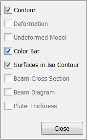
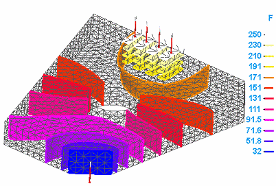
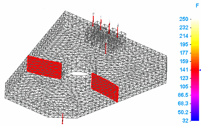
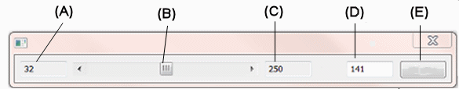
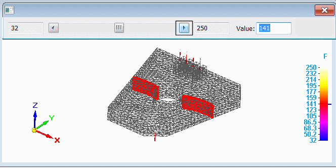
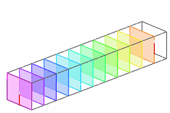
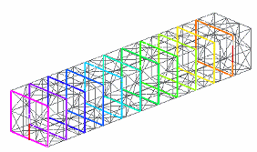

Use dynamic iso contours
You can use dynamic iso contours to review the results of all study types.
The default display for dynamic iso contours is iso lines. To view dynamic iso surfaces, you must solve the study with this option deselected in the Create Study (or Modify Study) dialog box: Generate only Surface Results (faster).
-
In the Simulation Results environment, select the Home tab→Show group→Display Options command
 .
. -
In the Display Options list, notice that the Contour and Color Bar options are selected by default.
Select the Surfaces in Iso Contour check box, and then click Close.

-
Select the Home tab→Contour Style group→Iso Contour command .
The plot updates to show the iso surface contours on the model. Each contour represents a constant result value. The color bar shows the result value at the end of each contour level.
Example:
-
Select the Home tab→Contour Style group→Dynamic Iso Contour command .
The model displays a single contour, representing the median value in the iso contour plot.
The Dynamic Iso Contour command bar is displayed.

Tip:To change the display between iso surface contour and iso line contour, press T.
-
Drag the slider bar (B) to move the iso contour through the color levels in the model.

-
(A) shows the minimum result value.
-
Dragging the slider (B) to the right displays higher result values. Dragging the slider to the left displays lower values.
-
Clicking the right arrow increments the iso contour to the next contour color level; clicking the left arrow decrements the iso contour to the previous contour color level.
-
(C) shows the maximum result value.
-
(D) shows the median value, which is the starting value for the dynamic iso contour. You can enter a specific value in the box and the iso contour level matching that value is displayed on the plot.
-
-
To exit, click Close (E).

-
You can increase or decrease the number of color levels (the number of lines or surfaces) displayed on the model using the Color Bar tab→Colors group→Levels option.
-
If the model contains plate or surface elements, you must select the Plate Thickness check box on the Display Options list to display iso surface contours instead of iso line contours.
-
Before selecting the Dynamic Iso Contour command, you can make changes to the results display.
-
On the Color Bar tab, you can change the font size, change the location of the header, and change the color bar type and units. See Using the colorbar to learn more.
-
You can show the deformed model using the Display Options command.
-
On the Display tab, you can change the model display settings, such as translucency, mesh display, and edge display.
Example:To achieve the appearance below, select the View tab→View Styles group→Shaded and Visible Edges option. Then you can change the default iso contour display using the following options on the Display tab→Primary Display group:
This display option
Is set to
View Style
Shaded and Visible edges
Face Translucency
75
Face Color
Automatic
Edge Style
Model
Edge Color
Automatic

To show the external mesh along with the iso lines or iso surfaces, change the Edge Style from Model to External Mesh.

To learn more, see Primary, deformed, and undeformed display.
-